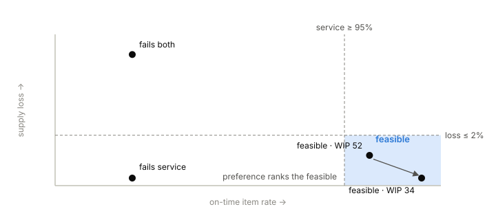

12 Interlude — Objectives Without a Score
Read after Lab 5, before Lab 6 · no Factorio required · ~20 minutes
Lab 5 ended with a comparison table and a refusal: three runs, nine metrics, and no column telling you who won. That refusal is a design decision with an argument behind it, and Lab 6 — where the scenario itself finally declares objectives — is built on the argument. Read it here first, so that when the capstone’s report says INFEASIBLE you know it is a verdict, not a value judgment.
12.1 Two kinds of wanting
An objective in FISL is one of exactly two things:
- A requirement: a hard line on one metric — on-time rate at least 95%, supply loss at most 2%. Each requirement gets a verdict: PASS, FAIL, or UNDETERMINED (more on the third shortly).
- A preference: a direction on one metric — less WIP is better. Preferences get no verdict at all, ever. They only order runs.
The evaluation rule is a conjunction: a run is feasible when every requirement passes. Fail one and the run is INFEASIBLE — and here is the part that matters — its preference values do not compete. A gorgeous WIP number attached to a failed customer is not a partial win; it is a well-decorated failure.

12.2 Why there is no score
The alternative everyone reaches for is a weighted score: 0.6 × service + 0.3 × loss + 0.1 × WIP, tune to taste. The course refuses it for three reasons that compound:
- The weights are an editorial opinion wearing arithmetic’s clothes. Whoever sets them decides how many units of saved inventory buy back one failed customer — a trade the customer was never consulted on. Requirements make the same commitments legibly: the threshold is printed, arguable, and owned.
- A score erases the difference between failure modes. Two runs scoring 0.71 — one failing service, one failing supply — need entirely different interventions. The conjunction preserves which line was crossed; the sum destroys it.
- Scores invite optimization of the score. Once a single number is the target, the system’s operators will find the corner of metric space that maximizes it, which is rarely the corner anyone wanted. Requirements plus preferences leave nothing to game: pass the lines, then improve the direction.
12.3 UNDETERMINED is a verdict, not an apology
What if a requirement’s metric couldn’t be measured completely — a censored percentile, an incomplete window? The requirement evaluates to UNDETERMINED: not passed, not failed, unknown. And unknown propagates: a run with one failed requirement is INFEASIBLE outright, but a run with no failures and one UNDETERMINED is UNDETERMINED overall — you may not call it feasible on a hunch.
This is Lab 5’s censoring discipline promoted to the evaluation layer: missing evidence never rounds toward the answer you were hoping for. Note also what objectives do not touch: protocol validity. Whether the run was a clean experiment (census exact, no violations) is reported separately from whether its outcome passed. A flagged run that “passes” is still a flagged run; a pristine experiment can fail honestly.
12.4 Symptoms, causes, and the trap the capstone sets
One more idea completes the kit. Requirements name symptoms — the places where the system’s behavior touches someone who can be hurt: the customer waiting, the supplier’s deliveries lost. Nothing guarantees that distinct symptoms have distinct causes. When they share one cause, two things follow:
- a fix aimed at a symptom can green its own requirement and move the conjunction not at all — effort spent, feasibility unchanged;
- the counting intuition (“we fail two requirements, so we’re two fixes away”) is wrong in both directions. One cause can fail two requirements; one fix can pass both.
Lab 6 is this paragraph made playable: a line squeezed by its supplier and its customer at once, a toolbox full of plausible local fixes, and a conjunction that only system thinking satisfies.
12.5 Claims to carry into Lab 6
- Any intervention that leaves the line’s constraint at 30/min cannot make the service requirement pass — however much it improves supply loss, WIP, or anything else. Feasibility is decided at the constraint.
- At least one reference solution will green one requirement while the conjunction stays INFEASIBLE — and
fisl comparewill print its preference values anyway, visibly not competing. - Among feasible runs, the WIP preference will produce a ranking; no infeasible run’s WIP will participate in it, no matter how low.
12.6 Further reading
- Hopp & Spearman, Factory Physics (3rd ed.), ch. 6 “A Science of Manufacturing” — “the essence of manufacturing management is trade-offs”; requirements-plus-preferences is that sentence made operational. Ch. 19 “Synthesis” for the whole-system view Lab 6 rehearses.
- The evaluation contract — verdicts, conjunction, no scalar score, and the INFEASIBLE framing in comparisons — is FISL’s ADR 0012 (with disclosure rules in ADR 0011).